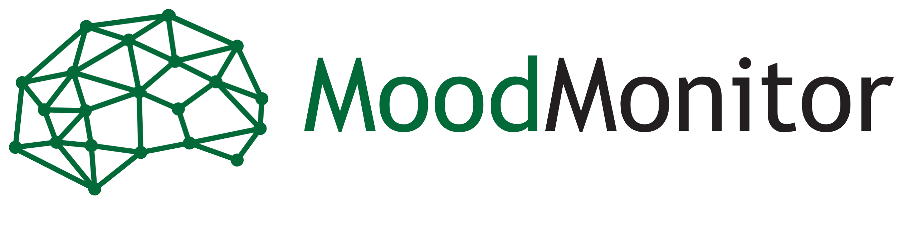
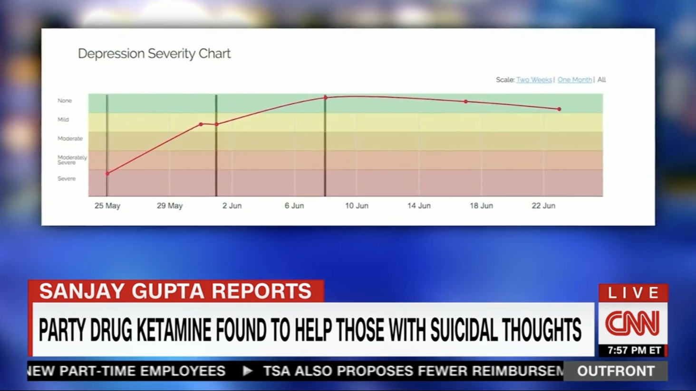
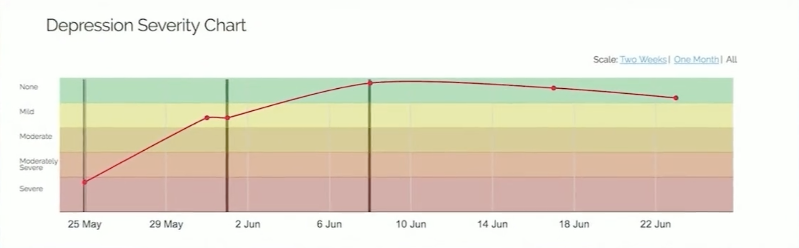
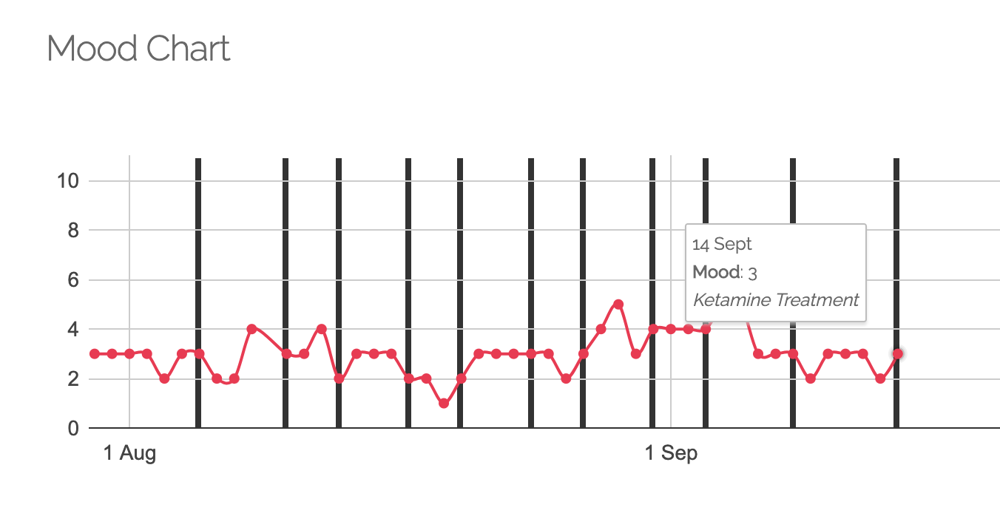
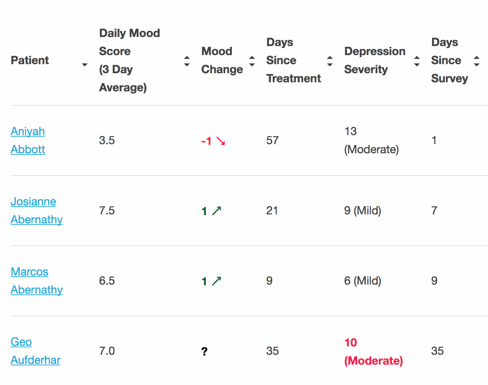
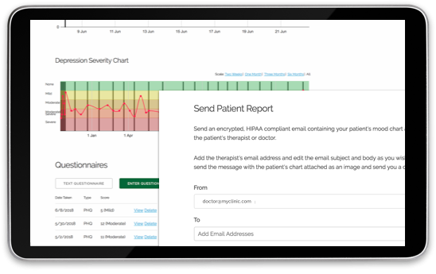
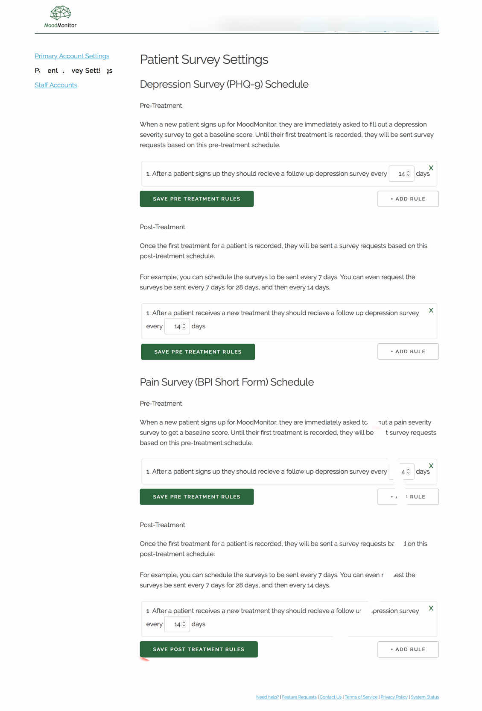

Nº 10 · file 10 of 23 · Habitat II — Software & science
MoodMonitor
Keeping providers and patients in touch through treatment for treatment-resistant depression.
- Habitat
- Ketamine clinics, U.S.
- First observed
- 2016
- Range
- 50+ clinics at merger
- Diet
- Daily SMS check-ins & clinically verified surveys
- With
- Noah Heller
- Status
- Merged into Osmind, September 2020
MoodMonitor is clinical software that keeps providers and patients in touch through treatment for treatment-resistant depression.
I co-founded MoodMonitor in 2016 with Noah Heller. Ketamine was emerging as a breakthrough treatment for depression, but outcomes depend on tracking patients' mood closely between sessions — and only about 11% of patients keep up a paper mood journal. We built MoodMonitor to close that gap: a HIPAA-compliant platform where patients receive a daily check-in by text message, complete clinically verified surveys every other week, and both patient and doctor watch progress chart in real time, together.
By the time we joined Osmind, more than 50 ketamine clinics and their patients nationwide used it — with over 90% of patients keeping up daily monitoring via text message.
The Osmind merger
In 2020, the ketamine and psychedelic therapy landscape evolved rapidly — new technologies, practices, and funders entered the space with great resources. We saw that MoodMonitor needed to change to keep providing the best possible service to our clinics and patients — and we're very excited to announce that change. MoodMonitor joined forces with Osmind.
We strongly believe Osmind is the best choice for ketamine practices and the future of ketamine and psychedelic therapy. They are already used all across the country and Lucia, Jimmy, and the Osmind team are aligned with our mission and care as deeply about patients as we do. We trust them to continue our work together helping patients.
We will no longer be working full-time on the project, but stayed on as advisors at Osmind and are available to talk at any time. Osmind continued to operate MoodMonitor for existing clinics so no patients lost care.
Plates · the mark

Plates · the product, as seen on CNN






Measurements
Field notes